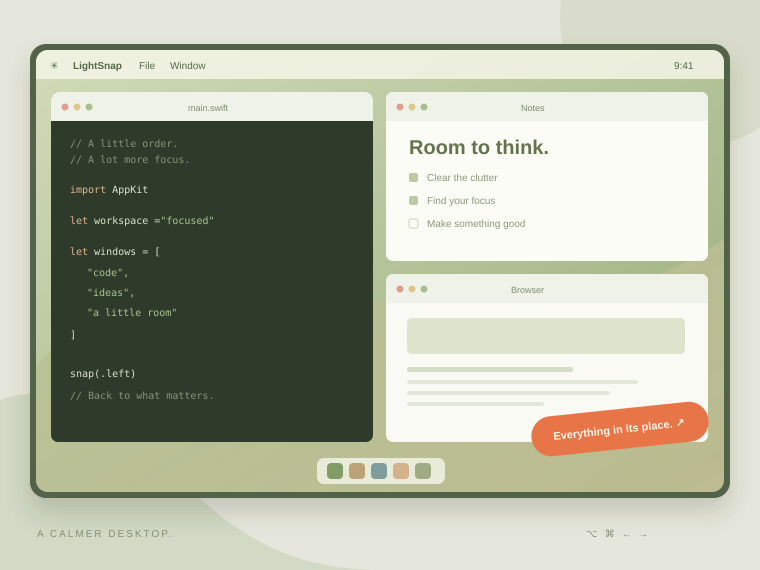

필요한 만큼, 딱 맞게.
절반부터 4분할, 6분할, ⅓·⅔까지.
Dock과 메뉴 막대를 제외한 작업 영역에 맞춰요.
흩어진 창을 제자리에. 단축키 한 번으로
나만의 작업 공간을 만드는 macOS 유틸리티.

아래는 브라우저 안의 모의 화면입니다.
실제 Mac 창이나 시스템 설정에는 접근하지 않습니다.
이 미리보기는 실제 앱의 배치 방식을 재현한 시뮬레이션입니다. 네이티브 단축키·접근성 권한·실제 성능 검증을 대신하지 않습니다.
복잡한 설정 없이 시작하고,
익숙해지면 나만의 조합으로.
절반부터 4분할, 6분할, ⅓·⅔까지.
Dock과 메뉴 막대를 제외한 작업 영역에 맞춰요.
좌우 단축키를 반복하면 ½ → ⅔ → ⅓.
여러 모니터 사이에서도 작업을 이어가세요.
네이티브 앱에는 외부 API·분석 SDK가 없습니다.
로그인 자동 실행과 메뉴 막대 상주를 지원해요.
소스를 빌드하고 접근성 권한을 허용하면 시작할 수 있습니다.